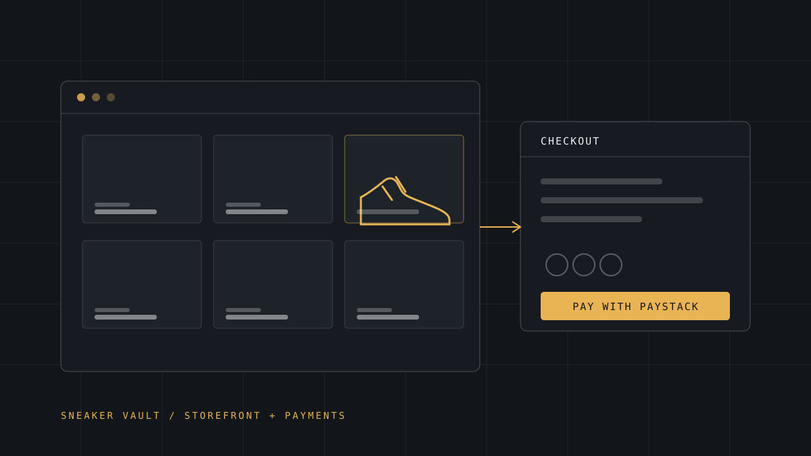

Entrepreneurship · Software
Sneaker Vault
The sneaker reselling business I founded in 2023, rebuilt from direct messages and spreadsheets into a storefront with verified payments, receipts and an admin panel.

- Role
- Founder, designer, developer
- Founded
- 2023
- Status
- Live
- Stack
- Next.js App Router · React 19 · Tailwind CSS v4
- Data
- Neon PostgreSQL · Vercel Blob
- Payments
- Paystack (server-side verification)
- Resend
- Links
- sneakervault.live
Problem
I started reselling sneakers in 2023. The early version of the business ran on conversations: catalogue in my head, orders in my inbox, prices in a spreadsheet, confirmation by screenshot. It worked until it didn't: mismatched sizes, missed follow-ups, and no single place where a customer could see what was actually available.
The problem was not demand. It was that the business had no system.
Why it mattered
Sneaker resale runs on trust. A buyer sending money for a pair they have only seen in a photo is taking a risk, and every unclear step is a reason to abandon the purchase. Turning that into a storefront with visible stock, explicit sizing and a real payment flow is not cosmetic; it is what makes a stranger comfortable enough to pay.
My role
Founder and sole builder. I run the business and wrote the software behind it.
- Defined the brand direction: minimal, niche and professional, with a scalable mark, a dark version for light surfaces and a red accent, with no checkerboard and no clutter
- Designed and built the storefront, product detail pages and three-step checkout
- Integrated Paystack, including the server-side verification step
- Built the admin panel: login, product CRUD with image upload, orders dashboard and status management
- Owned deployment, database, storage and email configuration
Technical approach
- Next.js App Router with React 19 and Tailwind CSS v4: server components for the catalogue, route handlers for the API surface.
- Neon Postgres as the single source of truth for products, stock and orders. Vercel's filesystem is read-only, so nothing is written to disk at runtime.
- Vercel Blob for uploaded product imagery, keeping images off the compute layer.
- Paystack popup checkout, with the transaction verified server-side before an order is ever marked as paid.
- Resend for transactional email: a customer receipt and an owner alert on every completed order.
- Session-cookie authentication for the admin panel, deliberately simple rather than a third-party auth dependency.
Implementation
The decision that shaped everything else was treating the frontend as disposable and the data as permanent. Every product, order and image lives in Postgres or Blob storage, so redeploying, rebuilding the UI or changing hosting does not lose the business.
The second was payment verification. The client confirms a payment, but only the server marks an order paid, by checking the transaction with Paystack's API using the secret key. A browser that reports success is a suggestion; a server-verified transaction is a fact.
- Size handling covers US / UK / EUR / CM conversions rather than assuming one convention
- Catalogue seeded idempotently through a migration script, so re-running it never duplicates data
- All secrets (payment keys, database URLs, email credentials) live in environment variables and never in the repository
- Seed data separated from real orders so testing never pollutes production
Impact
Sneaker Vault has been running as a public storefront since launch, at sneakervault.live, with an admin panel I use to manage the catalogue and fulfil orders myself.
The measurable outcome I care about most: a customer can now go from landing on the site to a server-verified paid order with a receipt in their inbox, without me touching a spreadsheet.
Revenue and volume figures are deliberately not published here. They can be shared privately with serious partners or acquirers on request.
Challenges
- Read-only hosting. Early assumptions about saving files locally broke on deployment. Moving products, orders and images to a database and Blob storage was the fix, not a patch.
- Payment trust edge cases. Abandoned checkouts, double-submits and delayed webhooks all want to mark an order paid. Server-side verification and idempotent status updates closed those gaps.
- Brand consistency. Getting a mark that survives at 16px, works on dark backgrounds and still looks professional took as many iterations as the code.
- Email deliverability. Custom-domain sending requires verified sender records; getting them right before launch prevented orders from landing in spam folders.
What I learned
Building software for your own money teaches restraint. Every feature has to justify itself against the time it takes away from sourcing, listing and fulfilling, so the admin panel is plain, fast and boring on purpose.
I also learned that the least glamorous 30% of a project (DNS records, sender verification, environment variables, migrations) is what separates a demo from a business.